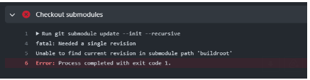

Please find the link to create your repository for this assignment in the "GitHub Repo Creation Links" section under course resources. You may find course resources on the left side pane of your module view, as highlighted below.
Your assignment 4 buildroot repo should start with template buildroot-assignments-base repository containing buildroot starter code. You will make changes to both your Assignment 4 repository and your assignment 3 repository to complete this assignment. Your assignment 4 repository will contain buildroot scripts and your assignment 3 repository will contain the source code for your finder application, which will be ultimately cross compiled and placed in your buildroot built root filesystem.
Start this assignment by creating an empty Assignment 4 repository using "GitHub Repo Creation Links" section under course resources. Do not attempt to use any of your previous assignment repositories for your assignment 4 repository content and the instructions below.
Don’t follow the instructions on the associated assignment 4 github page to add a README commit. To setup your assignment 4 buildroot repo, instead use these commands:
git remote add buildroot-assignments-base https://github.com/cu-ecen-aeld/buildroot-assignments-base.git
This specifies the base repository at https://github.com/cu-ecen-aeld/buildroot-assignments-base.git with example starter code
git fetch buildroot-assignments-base
git merge buildroot-assignments-base/master
This command makes your master branch match the master branch of buildroot-assignments-base
git submodule update --init --recursive
This command clones the assignment-autotest submodule and nested git repositories,

Buildroot documentation, including:
https://buildroot.org/downloads/manual/manual.html#requirement-mandatory
https://buildroot.org/downloads/manual/manual.html#customize
https://buildroot.org/downloads/manual/manual.html#generic-package-tutorial
QEMU Documentation and network options:
See https://github.com/cu-ecen-aeld/aesd-assignments/wiki/Setting-up-Github-Actions
For this and later buildroot assignments you need to setup your SSH key as a repository secret.
After accepting the classroom assignment, your buildroot project repository will be created with a base_external directory at the root which you will update to contain your buildroot image customizations.
Add all mandatory packages to your build system as listed in the buildroot documentation. Many of these packages/utilities will likely already exist in your build host. Use the which command to verify. You may also refer to the assigment 4 buildroot section of https://github.com/cu-ecen-aeld/aesd-autotest-docker/blob/master/docker/Dockerfile for the packages installed in the automated test runner.
Add buildroot as a git submodule in the root of your project repository using git submodule add. If you aren't familiar with git submodules, see https://git-scm.com/book/en/v2/Git-Tools-Submodules for background.
a. Use https://gitlab.com/buildroot.org/buildroot/ as the source
b. Use the tag 2024.02.13 as the Buildroot release to target.
c. Be sure to git add your buildroot submodule directory from the root of your project repository and git commit to save the appropriate commit hash for the buildroot directory before running ./build.sh.
4. Update provided files in buildroot-assignments-base to complete the addition of a package aesd-assignments in the base_external/package directory and any other required files using the instructions discussed in the assignment video. This package should build applications based on your assignment 3 and later source repository using the git site method and the ssh url (not https) and include the tester.sh, writer application (cross compiled for the target) and finder.sh scripts in the /usr/bin directory of the rootfs, as well as any dependencies for these files (including the content in the conf directory).
a. Add base_external/Config.in, external.mk and external.desc files using project_base as your external name in external.desc
b. Modify your finder-test.sh to run with necessary files found in the PATH.
i. In other words, you should be able to run /path/to/script/finder-test.sh and the script should run successfully, assuming all executables are in the PATH and config files are at /etc/finder-app/conf. This change will be added to your assignment 3 and later source repository. The point of this step is to ensure you can run the finder-test.sh script using /usr/bin/finder-test.sh and all scripts and executables needed by finder-test.sh will be located on the target qemu rootfs.
c. Modify your finder-test.sh script to write a file with output of the finder command to /tmp/assignment4-result.txt
5. Run ./build.sh the first time
a. This will generate a default buildroot/.config using qemu_aarch64_virt_defconfig.
6. Run ./save-config.sh to save this configuration to your project specific defconfig file. Your base_external/configs/aesd_qemu_defconfig content should now be updated to reflect the content in buildroot/configs/qemu_aarch64_virt_defconfig
7. Select the aesd-assignments package you added in your buildroot configuration to add it to your image using make menuconfig from the buildroot subdirectory.
8. Run the save-config.sh script in the root folder to save the configuration, including the selection of your aesd-assignments package, into the default buildroot configuration file. After running this script you should see that the aesd-assignments package configuration is added to your aesd_qemu_defconfig file. Check this change into your assignment repository.
9. Run ./build.sh a second time. This will build your system (will take hours to complete). See the Buildroot speedup suggestions below for optional suggestions to speed up future builds.
10. Use the runqemu.sh script in the root folder to run your generated qemu image. This command is based on the file at buildroot/board/qemu/aarch64-virt.
11. Add a clean.sh script in the root folder which runs make distclean from the buildroot directory.
12. After the build completes, add the dropbear package to your image to support ssh, save the updated configuration with the save_config.sh script and build using build.sh
a. Add this using “make menuconfig” from the buildroot directory.
b. Hint: You can search for the package using “/” from the menuconfig utility.
13. Set the default root password to “root” using buildroot menuconfig, save with the save_config.sh script and build into the image using build.sh
14. Verify you can use ssh to login to your host using port 10022 and the root user/password.
15. Use scp to transfer your /tmp/assignment4-result.txt file from your qemu instance to your assignment-3-and-later repository in an assignments/assignment4 folder.
16. Tag the assignment with “assignment-<assignment number>-complete” once the final commit is pushed onto the respective repositories. The instructions to add a tag can be found here.
These are some optional steps you can use to speed up your buildroot builds. If you do use these, be sure to specify cache directories in relation to $HOME and not using absolute paths so your build will work when run by others or automated test actions.
a. BR2_DL_DIR allows you to specify a package download directory outside your buildroot tree which is not removed with distclean. Using ${HOME}/.dl is one option, which will create a hidden .dl directory under your home directory.
b. Turn on Enable Compiler Cache in build options.
You should be able to clone your final buildroot assignment repository to a new directory, run ./build.sh twice to build the system image and ./runqemu.sh to start the image with no other interaction necessary.
You should be able to run the ./clean.sh script, then run the ./build.sh twice and ./runqemu.sh script to start the image with no other interaction necessary.
Once the qemu image has started, you should be able to login and run finder-test.sh (without specifying path) to execute the tester script.
a. The script should complete successfully, and should be using the writer executable which buildroot has cross compiled for the target.
b. The script should be able to be run from any starting directory.
c. /var/log/messages should contain your syslog messages from the writer application.
4. You should be able to login via ssh or perform file transfer using scp to/from the qemu virtual machine using port specified above.
5. Your ./full-test.sh script should complete successfully when run. You must install sshpass for this step to complete successfully. Use sudo apt-get install sshpass for this step to complete successfully.
Your submission repository should contain the buildroot setup used to generate and run the qemu image described above.
Your buildroot submission repository should reference your aesd-assignments repository containing updated content from the assignments 3 and later repository.
When your buildroot submodule clone fails in your actions runner you may see an error which looks like this in your actions runner during the submodule checkout step:
This happens for one of a few possible reasons including:
You are referencing a buildroot commit which doesn't exist in the upstream repository, for instance if you've made a change and commit yourself which doesn't exist in the upstream repository.
You've got the wrong submodule repository specified for buildroot in your .gitmodules file.
A failure happened (network issue, etc) during the initial clone of the buildroot repository and your git submodule is now in a bad state.
To recover, first make sure #1 or #2 are not the issue by cloning your repository in a different directory and ensuring the git submodule update --init --recursive step successfully clones your buildroot submodule.
If this does not recover, the easiest fix is to remove your actions runner, completely delete the actions runner directory, and then re-run your actions runner setup steps using the instructions in https://github.com/cu-ecen-aeld/aesd-assignments/wiki/Setting-up-Github-Actions. An alternative to deleting the entire actions runner directory is to go into your actions runner work directory (typically named _work ), browse into your assignment directory, find the buildroot directory and remove it. Then run the git submodule update --init --recursive command from your work directory to ensure this step succeeds.
Once the image built by buildroot is running, you might see error(s) related to writer execution.
Especially 'writer not found'. This is a commonly faced issue and usually this happens when the cross-compile process hasn't been successful or not using the 'CC' variable in the makefile.
Buildroot expects the CC variable and your makefile needs to be updated from A3. You can refer to lecture notes on how to define the CC variable.
Also make sure to not check in the writer binary writer into your repository.